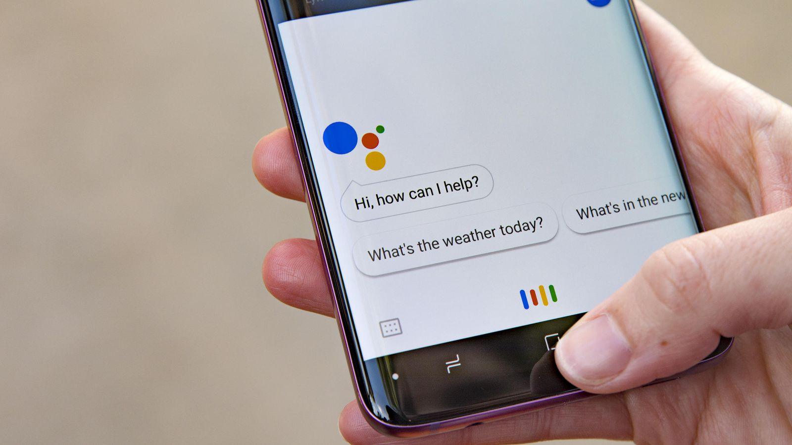

Ce este Siri?
Siri este un asistent digital care învață comportamentul dumneavoastră și furnizează informații și recomandări predictive. Siri trimite comenzile dumneavoastră la serverele Apple pentru interpretare și întoarce acea interpretare într-o acțiune. Din acest motiv, Siri nu funcționează daca nu sunteți conectat la internet.
Pe Siri o puteți întreba absolut orice și veți fi surprins cât de multe poate întelege.
Siri este disponibil pe majoritatea dispozitivelor Apple. Aici includem: iPhone, Mac, Apple Watch, Homepod, iPad și Apple TV.
La fel ca orice asistent virtual și Siri are nevoie de un cuvânt de trezire. În cazul acesta, este pe cât se poate de simplu, ”Hey Siri”.
Atenția lui Siri poate fi activată și prin alte metode. Pe Iphone-urile mai vechi Siri poate fi activată apăsând și tînând lung pe butonul Home. Iphone-urile mai noi, nu au buton Home, așa că Siri poate fi activată apăsând lung pe butonul din lateralul telefonului.
Ce poate face Siri?
Siri este un asistent vocal foarte bun care înțelege limbajul uman și poate face o multitudine de lucruri. Printre caracteristicile notabile pe care le poate face este trimiterea de mesaje audio și traducere între diferite limbi. Având acces la toate aplicațiile de pe telefon precum cea de e-mail, contacte, mesaje, hărți, vă poate da tot felul de informații de care aveți nevoie. De aceea, dacă îi cereți anumite direcții, Siri va deschide Maps. Dacă îi cereți să efectueze un apel, va deschide lista de contacte și tot așa.
Printre comenzile pe care le mai poate face Siri, le mai enumerăm pe următoarele:
Redă muzică
Verifică vremea
Poate seta memento-uri
Setează alarme și temporizatoare
Trimite și citește mesaje
Poate efectua apeluri
Vă poate da direcții
Vă răspunde la diverse întrebări ale căror răspunsuri se regăsesc pe internet
Poate trimite bani oricărei persoane din lista de contacte
Controlează dispozitivele Homekit din casă
Deschide și interacționează cu aplicațiile din telefon.

Care este mecanismul de funcționare a programului Siri?
Siri este un asistent vocal dezvoltat de Apple, iar limbajele de programare utilizate în crearea și funcționarea sa includ o serie de tehnologii și cadre de lucru.
Iată câteva dintre limbajele de programare cheie implicate în dezvoltarea lui Siri:
Objective-C și Swift: Acestea sunt limbajele de programare preferate pentru dezvoltarea aplicațiilor pe platforma Apple, inclusiv aplicațiile Siri.
Objective-C a fost utilizat inițial în dezvoltarea Siri, dar în ultimii ani, Swift, un limbaj de programare modern și mai ușor de înțeles, a devenit din ce în ce mai popular în dezvoltarea aplicațiilor iOS și macOS, inclusiv pentru Siri.
Python: Python este folosit pentru dezvoltarea unor aspecte ale funcționalității lui Siri, în special pentru implementarea algoritmilor de procesare a limbajului natural și a inteligenței artificiale. Python este cunoscut pentru simplitatea sa și bibliotecile bogate, ceea ce îl face potrivit pentru lucrul cu date și manipularea textului.
C++ și C: Unele componente ale lui Siri, cum ar fi motorul de recunoaștere vocală și motorul de sinteză vocală, pot fi scrise în limbajele de programare C++ și C. Aceste limbaje sunt adesea preferate pentru aplicații care necesită performanțe ridicate și gestionarea eficientă a resurselor, cum ar fi procesarea vocală în timp real.
JavaScript și HTML/CSS: Pentru dezvoltarea funcțiilor și interfeței web asociate cu Siri, cum ar fi paginile de ajutor sau paginile de setări, se pot folosi tehnologii web precum JavaScript pentru funcționalitatea interactivă și HTML/CSS pentru designul paginilor web.
Machine Learning Frameworks: Pentru a îmbunătăți înțelegerea și răspunsurile lui Siri, Apple utilizează și diverse cadre și biblioteci de învățare automată și inteligență artificială, care pot fi scrise într-o varietate de limbaje, inclusiv Python, dar și în limbaje specifice precum TensorFlow sau PyTorch.
Acestea sunt doar câteva dintre limbajele și tehnologiile implicate în dezvoltarea și funcționarea lui Siri. Dezvoltarea și îmbunătățirea continuă a lui Siri implică o echipă de ingineri software care utilizează o gamă largă de competențe și limbaje de programare pentru a oferi o experiență optimă utilizatorilor.